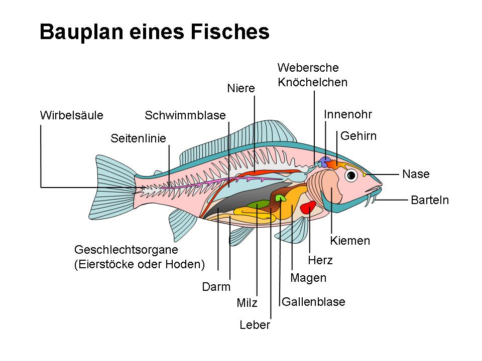

Die Welt der Fische
Fische gehören zu den ältesten bekannten Wirbeltieren der Erde und leben seit hunderten Millionen Jahren in nahezu allen Gewässern. Man findet sie in Ozeanen, Seen, Flüssen sowie in extremen Lebensräumen – von eisigen Polargebieten bis zu tropisch warmen Meeren.
Mit über 30’000 bekannten Arten zählen Fische zu den artenreichsten Tiergruppen überhaupt.
Merkmale von Fischen
- Flossen ermöglichen präzise Fortbewegung und Stabilität
- Kiemen erlauben die Atmung von Sauerstoff aus dem Wasser
- Schuppen schützen den Körper und reduzieren Reibung
- Wechselwarmer Stoffwechsel, bei dem sich die Körpertemperatur der Umgebung
Warum sind Fische wichtig?
Fische sind wichtig für die Natur, weil sie Teil der Nahrungskette sind. Ausserdem essen auch Menschen auf der ganzen Welt Fisch.
